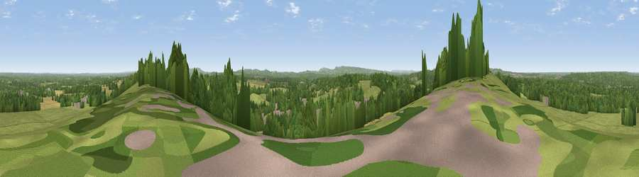

Viewpoint near Puttenham
#27480 in England · top 14% of its area beats it · near PuttenhamWhere it is
The exact computed spot (SU 92725 48275). Click the marker for map links.
The view, rendered

A 360° render of this exact spot computed from the terrain model, tree cover and land cover — summer colours, afternoon light, calibrated against photographs of famous viewpoints. Real trees, hedges and buildings will differ in detail.
The panorama
Grey silhouette: terrain skyline in each direction (720 bearings, Earth curvature and refraction included). Dashed green: skyline with trees (+15 m) and buildings (+8 m) as obstacles. Blue strip: how far the ground is visible on each bearing.
Where the view opens
Wedge length = distance to the farthest visible ground on that bearing (vegetation-aware). Rings at 10, 25 and 50 km.
What fills the view
47% grassland · 40% woodland · 8% cropland · 5% built-up
Angular shares of the visible panorama (visual magnitude), not map area. Landscape diversity 0.47 (0–1 Shannon).
Key numbers
More beautiful places nearby
The staircase of upgrades: each row has a higher view potential than everything closer. Driving times are estimates from straight-line distance, calibrated against real road routing — check an actual route before setting out.
| Place | Direction | Drive | Score |
|---|---|---|---|
| Viewpoint near Puttenham | W · 1 km | ~4 min | 46.3 |
| Viewpoint near Wanborough | E · 2 km | ~5 min | 48.1 |
| Viewpoint near Compton | E · 3 km | ~8 min | 49.4 |
| Viewpoint near Hambledon | SSE · 11 km | ~20 min | 57.7 |
| Viewpoint near Hascombe | SSE · 11 km | ~21 min | 62.0 |
| Temple of the Four Winds | S · 13 km | ~23 min | 65.4 |
| Viewpoint near Holmbury St Mary | ESE · 18 km | ~32 min | 67.0 |
| Viewpoint near Fernhurst | S · 19 km | ~33 min | 75.1 |
51.22615, -0.67349 · source: screening · position refined by local search. Computed location — check access rights before visiting.